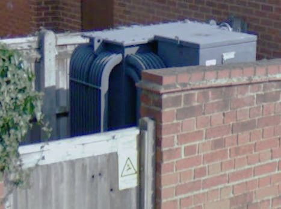
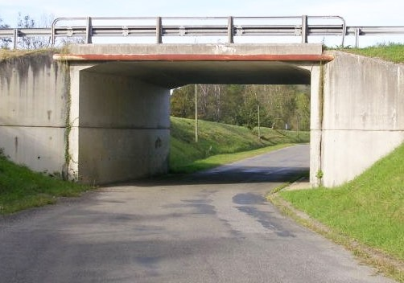

|
 previous / next column previous / next column
A PHYSICIST WRITES . . .
(November 2017)
I need to make a start on writing this month's column - but rather unexpectedly (as I shall explain) I find myself in France! I've pointed out one or two oddities of this lovely country before: the French refer to dipped headlights enigmatically as either les codes or les feux de croisement (fires at a crossroads?). On some main roads, annoyingly, the speed limit is fine-tuned to the extent of varying every kilometre or less, making it hard to keep track of it even with the help of repeater signs.
A curious French medical rule: before you can book in for an operation, you must possess a card showing your blood group (and indeed, most people here carry the card anyway). A curiouser rule: to obtain the card, two samples of blood must be given, either on different days or else to different medics who must not be in the room simultaneously (though how could the result possibly be affected if they were?).
A new French oddity for me this week was the sight, in a post office, of cardboard boxes for sale that were clearly designed for the posting of a pair of bottles of wine! And I continue to be nervous when feeling around a continental bathroom doorway for the light switch, in case my fingers first encounter a live, unshuttered wall-socket.
Doesn't this feature seem extraordinary to us in the UK, where the building regulations forbid even a safe, shuttered mains socket to be installed in a normal-sized bathroom (for fear that something that's plugged in will be dropped into the bath or basin)? I must admit, though, that there don't seem to have been many scare-stories of people electrocuting themselves with 220 volts.
Which reminds me of a quite ridiculous tale of European 'harmonization': as you will know, since the year dot the mains voltage in the UK (or most of it) has been 240 V, whereas mainland Europe has had a 220 V supply. But then in 1994 the European Commission decreed that the whole of Europe should be unified at 230 - supposedly to remove a perceived barrier to trade.
Well, maybe some countries or regions have moved up from 220 V, but certainly the UK has not converted down from 240 (except in N Ireland, I believe). I imagine it would have to be done either by reducing the output voltage of all power stations simultaneously, or else by replacing our local roadside transformers (as in the photo) with ones that deliver 230 V.

But here's the absurdity: the EC must have realized how difficult such changes would be, because at the time, or soon after, they stated that a tolerance of +10%/-6% (around the 230 V) would be allowed in the UK, while a tolerance of +6%/-10% would apply on the mainland. No need to get a calculator out - what it meant was that our 240 V supply (even allowing for its own inevitable fluctuations) wouldn't actually need to be altered! And likewise across the Channel. The French have a word for this: plus a change, plus c'est la mme chose. But don't ask me what might happen to anyone's volts after Brexit...
Now to tell you why Mrs S and I are here, enjoying (I confess) fine weather, and seeing (just now) the first snow on the Pyrenees. We're staying chez my sister P and brother-in-law J, as we often do. The difference this time is that J was lined up for a major operation in mid-October (from which he is recovering well) - but two weeks earlier, P was hit by a mystery illness that has since put her in hospital three times (though as I write, she is at least in a better state than she was). So we offered to fly south, hold the fort, and give support to whoever was recuperating in it.
Someone else is arriving shortly to take over, but we shall have been here for three weeks, and I can't remember the last time we were away from home for more than ten days! Certainly we've never not booked return tickets before. But our grasp of French must have improved. And did I mention the lovely weather?
This has encouraged us out, naturally. I sometimes take a brisk circular walk that leads me through a tunnel under a main road. I had noticed a strange echo in the tunnel previously. Last week I tested it properly, by clapping my hands. I also estimated a few measurements (and took a photo for you): the tunnel is roughly 7 m wide, 3 m high and 13 m long. What's strange is that when I'm standing at its mouth, and I clap, a distinct echo returns to me after about a third of a second (and then dies away).

In that time, since the speed of sound is around 340 m/s, the noise must be travelling a distance of some 110 m before arriving back at my ears. But where on earth does it go to and return from? There's certainly no wall 55 m away for it to reflect off! Equally odd is that if I move towards the centre of the tunnel, the delay steadily decreases to zero. But to my shame, I can't explain it at all.
When I mentioned French speed limits at the start, I didn't mean that I myself am having to watch them. P and J have made many friends locally, hence there has been no lack of offers to drive us anywhere (for hospital visits etc). And it's been interesting to observe everyone's driving styles. Though really, my only comments on them would be along the lines of some that I've made here before (about UK driving).
Our kind chauffeurs seem unconcerned about the consequences if their steering-column airbag happened to blow up while an arm was across it, or their face placed too near. As for being tailgated, c'est la vie apparently. One-handed steering is not uncommon. Stationary wheel-turning is habitual - even though tyres are plainly designed for gripping the road, not slipping round on it! But I guess the average driver would say that the chances of mishap from these behaviours aren't big enough to worry about.
In advanced driving we look at things differently: the aim (as I see it, anyway) is to try to consider all such risks, and to drive in a manner that reduces them to as near zero as possible (while still allowing us to make reasonable progress along the road). A bit of a headache sometimes, maybe, but surely worth it...
Peter Soul
previous / next column
|